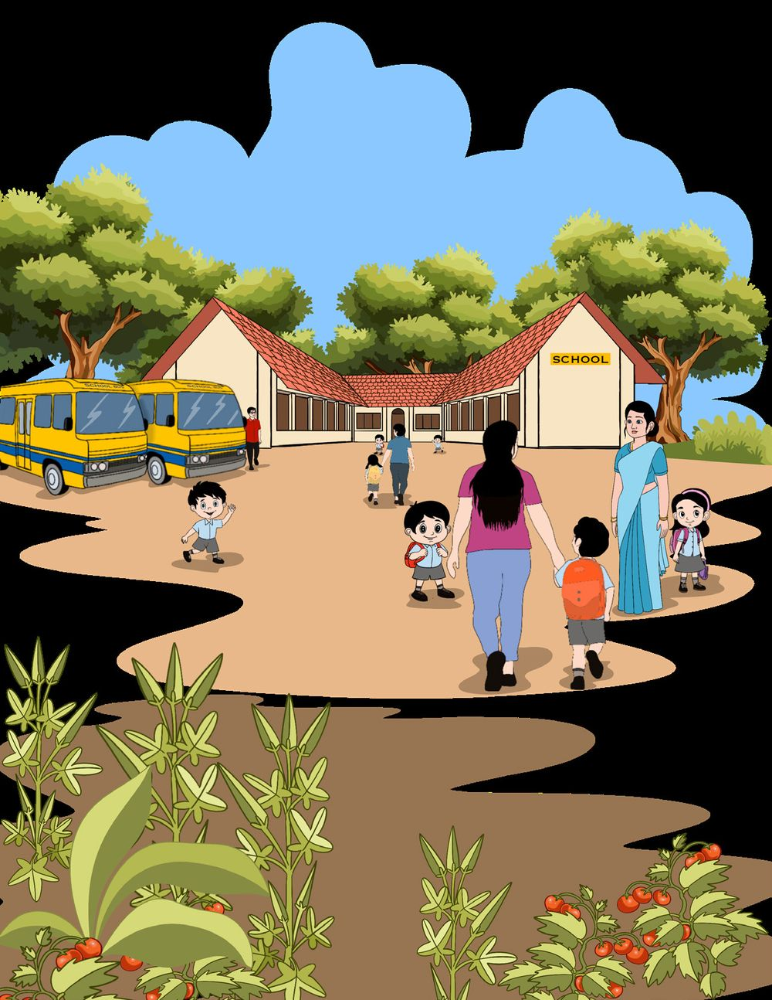
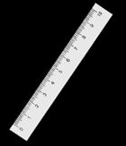
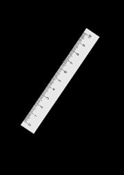
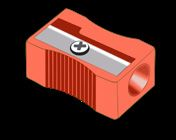
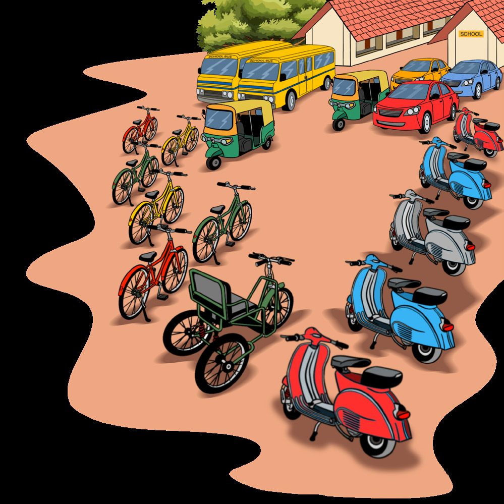
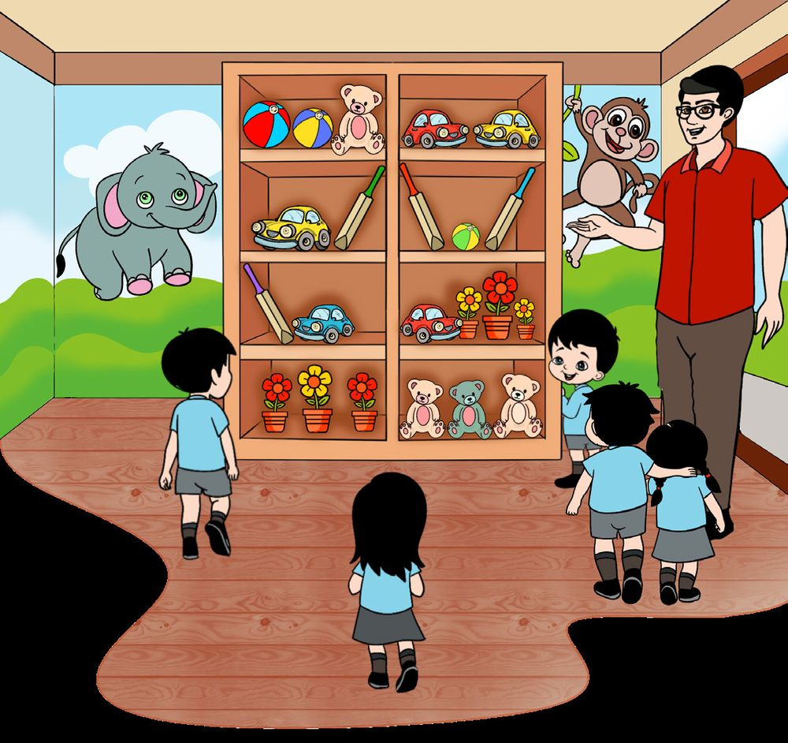
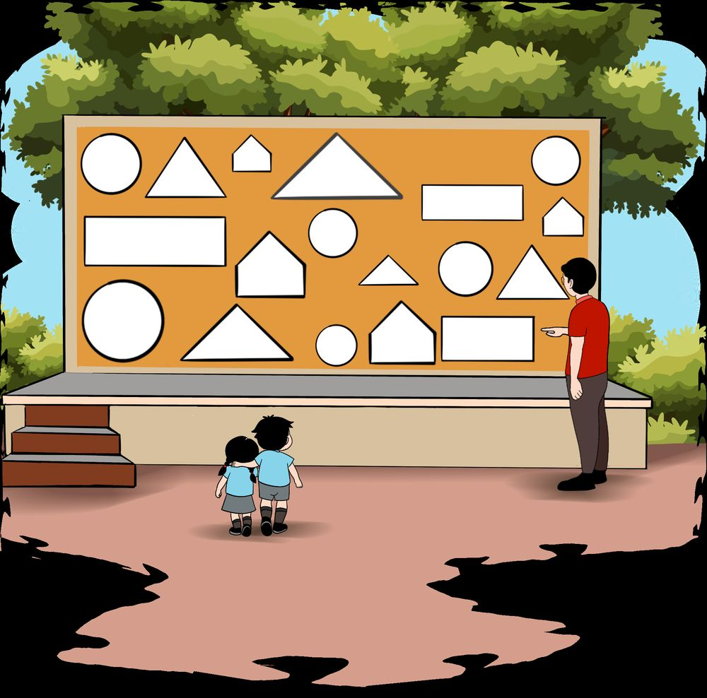
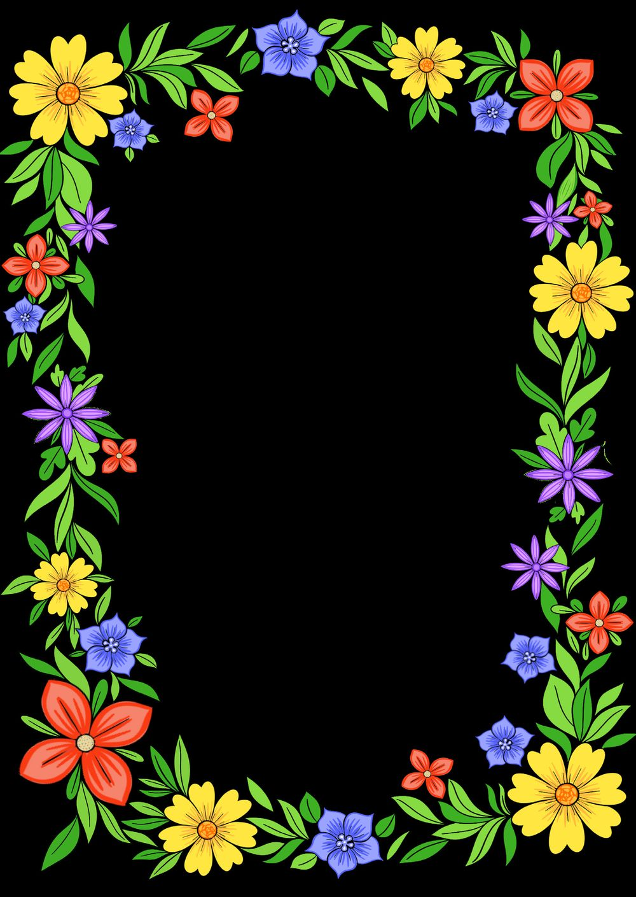

11 Count and Arrange
185


11 Count and Arrange
185




Count and write. Anvith and friends arranged some objects as shown below: Pencil Eraser Ruler Sharpener Write the number of each object in the boxes below.
Write the answer. Which object is the least in number than all the others? Which is more in number than all the others? How many pencils are more than sharpeners? How many erasers are less than rulers?
186


A meeting in Anvith’s school. They counted the vehicles parked outside.
See the picture and write the number of each vehicle. Car
Which vehicle is more in number?
Autorikshaw Tricycle
Which is the least?
Bicycle Scooter
How many vehicles are there in all?
Bus
187


Anvith and friends went to the pre-primary class. They counted the toys in the shelf.
Write the number of toys Car
Ball
Bat
Teddy Bear
Put if correct and if wrong. 1. There are more bats than balls 2. There are less flowers than bears 3. Number of bears and cars is the same 4. There are no toys of the same number
188
Flower


Stage
Colour the shapes in the picture, same colour to same shape. Count and write.
189


See the flowers See the picture drawn around the window of Amrith’s class room. Fill in the table below.
Flower
Number
Red Blue Yellow Violet Number of flowers with 5 petals Flowers of which colour are more in number? Write the colours of the flowers of the same number? How many flowers are there in all?
190
CONSTITUTION OF INDIA Part IV A FUNDAMENTAL DUTIES OF CITIZENS
ARTICLE 51 A Fundamental Duties- It shall be the duty of every citizen of India: (a) to abide by the Constitution and respect its ideals and institutions, the National Flag and the National Anthem; (b) to cherish and follow the noble ideals which inspired our national struggle for freedom; (c) to uphold and protect the sovereignty, unity and integrity of India; (d) to defend the country and render national service when called upon to do so; (e) to promote harmony and the spirit of common brotherhood amongst all the people of India transcending religious, linguistic and regional or sectional diversities; to renounce practices derogatory to the dignity of women; (f) to value and preserve the rich heritage of our composite culture; (g) to protect and improve the natural environment including forests, lakes, rivers, wild life and to have compassion for living creatures; (h) to develop the scientific temper, humanism and the spirit of inquiry and reform; (i)
to safeguard public property and to abjure violence;
(j) to strive towards excellence in all spheres of individual and collective activity so that the nation constantly rises to higher levels of endeavour and achievements; (k) who is a parent or guardian to provide opportunities for education to his child or, as the case may be, ward between age of six and fourteen years.
CHILDREN'S RIGHTS Dear Children, Wouldn’t you like to know about your rights? Awareness about your rights will inspire and motivate you to ensure your protection and participation, thereby making social justice a reality. You may know that a commission for child rights is functioning in our state called the Kerala State Commission for Protection of Child Rights. Let’s see what your rights are: • Right to freedom of speech and expression. • Right to life and liberty. • Right to maximum survival and development. • Right to be respected and accepted regardless of caste, creed and colour. • Right to protection and care against physical, mental and sexual abuse. • Right to participation. • Protection from child labour and hazardous work. • Protection against child marriage. • Right to know one’s culture and live accordingly.
• Protection against neglect. • Right to free and compulsory education. • Right to learn, rest and leisure. • Right to parental and societal care, and protection.
Major Responsibilities • Protect school and public facilities. • Observe punctuality in learning and activities of the school. • Accept and respect school authorities, teachers, parents and fellow students. • Readiness to accept and respect others regardless of caste, creed or colour.
Contact Address:
Kerala State Commission for Protection of Child Rights 'Sree Ganesh', T. C. 14/2036, Vanross Junction Kerala University P. O., Thiruvananthapuram - 34, Phone : 0471 - 2326603 Email: childrights.cpcr@kerala.gov.in, rte.cpcr@kerala.gov.in Website : www.kescpcr.kerala.gov.in Child Helpline - 1098, Crime Stopper - 1090, Nirbhaya - 1800 425 1400 Kerala Police Helpline - 0471 - 3243000/44000/45000
Online R. T. E Monitoring : www.nireekshana.org.in